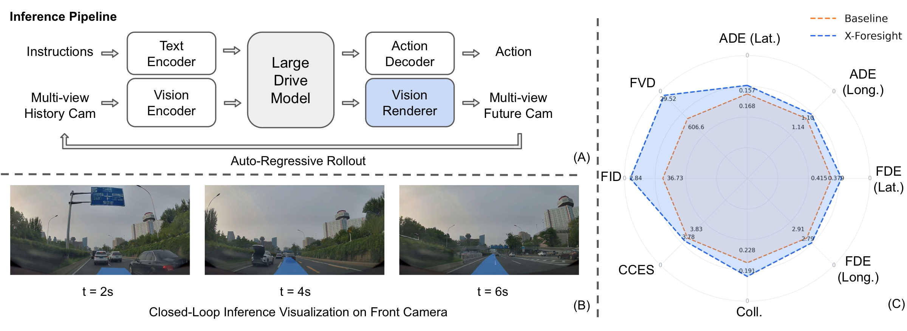
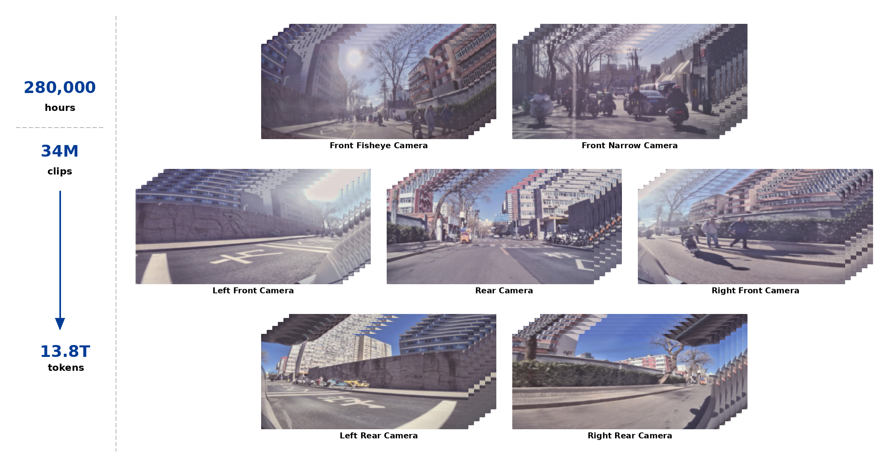
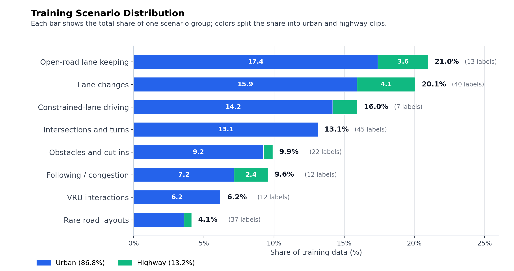
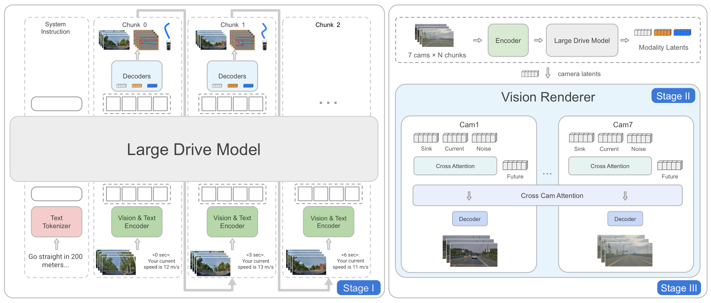
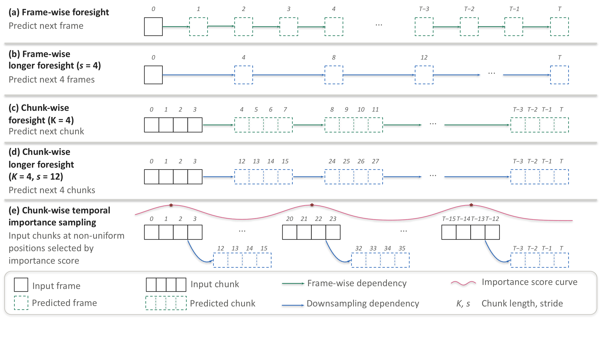
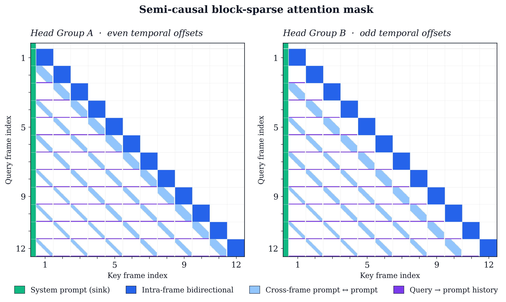
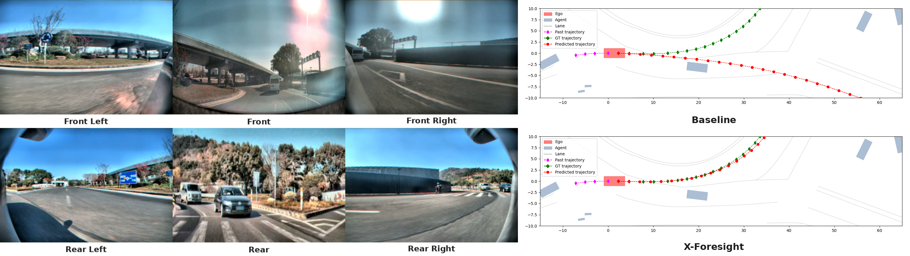
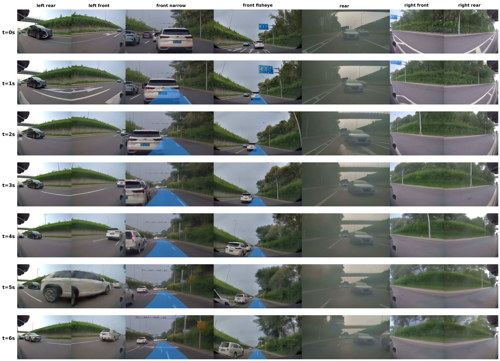

X-Foresight: A Joint Vision-Action Causal Forecasting Network via Predictive World Modeling
Why predictive world modeling for VLA?
Physical world knowledge resides mainly in videos. Equipping Vision-Language-Action (VLA) models with such knowledge is fundamental for safe and generalizable planning. To extract this knowledge from video data, predictive world modeling enables VLA to internalize physical dynamics and long-term causality of driving by predicting future video from past observations. However, naive next-frame prediction faces two challenges: (1) unlike semantically distinct text tokens, video tokens are inherently low-entropy and redundant, causing prediction to easily degenerate into trivial extrapolation; (2) world modeling poses a temporal dilemma: instantaneous dynamics need dense frame prediction, while long-term causality unfolds over long and variable-size horizons that dense prediction cannot efficiently cover.
To learn world knowledge effectively, we introduce X-Foresight, a predictive world model integrated directly into the VLA architecture to jointly learn world modeling and real-time action control. At its core lies a long-horizon chunk-wise auto-regressive strategy that addresses both challenges: by predicting across semantically distant chunks rather than adjacent frames, it escapes trivial extrapolation, while preserving dense intra-chunk frames to capture instantaneous dynamics and sparse inter-chunk transitions to capture long-term causality — resolving both the entropy and temporal-dilemma challenges at tractable training cost. A curriculum learning schedule progressively extends prediction horizons to stabilize training. To further capture long-term causality effectively, we present temporal importance sampling, which concentrates supervision on safety-critical chunks identified by ego-motion and behavioral signals. We further delegate photorealistic synthesis to a diffusion-based multi-view renderer, enriching photorealistic details and improving pixel-level appearance. Comprehensive experiments demonstrate that X-Foresight significantly outperforms VLA baselines in planning performance while maintaining strong generative fidelity, establishing a robust paradigm for world-knowledge-driven autonomous systems.

Contributions
- Long-horizon chunk-wise auto-regression escapes trivial frame-to-frame extrapolation while preserving dense intra-chunk dynamics — broader world causality at tractable training cost.
- Curriculum learning with extended foresight (CLEF) progressively widens the inter-chunk stride from 1 s to 3 s, stabilizing long-horizon prediction.
- Temporal importance sampling (TIS) focuses supervision on safety-critical chunks scored by peak weighted lateral/longitudinal acceleration.
- Diffusion-based multi-view Vision Renderer integrated into the AR loop to restore photorealistic surround-view detail.
Industry-scale multi-camera driving
We built an industry-level dataset with approximately 280,000 hours of in-house driving data — 34 million clips up to 30 s each, tokenized into 13.8 T tokens. A 7-camera surround-view rig (front fisheye, front narrow, left/right front, left/right rear, rear) provides 360° coverage. Streams are stored at 12 Hz and downsampled to 4 Hz for training, balancing motion fidelity against tractable sequence length.


Large Drive Model + Vision Renderer
X-Foresight consists of two modules. The Large Drive Model (LDM) is an auto-regressive transformer that consumes multi-view observations, language, and ego-state, and predicts three targets at every step: ego actions for real-time control, a bird's-eye-view scene plot, and per-camera latent tokens summarizing the future appearance from each viewpoint. The Vision Renderer is a diffusion-based decoder whose rendered frames are fed back into the LDM as fresh observations, closing the auto-regressive loop.

Large Drive Model
Multi-modal prompt: a global system prompt followed by temporal chunks
[ li, Oi, Ai, Qi ] — horizon text,
multi-view ViT tokens, ego state, query tokens that trigger future-variable prediction.
Trained end-to-end under teacher forcing on action, camera, and BEV losses.
Vision Renderer
A DiT video generator with rectified-flow objective, built atop X-World's view-temporal attention and a 3D causal VAE. The renderer is conditioned only on the LDM's camera tokens (no action shortcut), restoring photorealistic detail while remaining controlled by the LDM's latent imagination.
Chunk-wise foresight, not adjacent-frame guessing
Frame-wise prediction provides only a weak learning signal — adjacent camera frames differ only marginally over short intervals, and the model collapses into trivial extrapolation. Aggressive temporal downsampling helps the horizon but loses the motion cues needed for trajectory prediction.
Chunk-wise foresight preserves short-term structure inside each 1-second chunk while requiring the model to predict a longer segment of future evolution at every auto-regressive step. Increasing the stride between chunks (longer foresight) extends the prediction horizon at no extra compute, and temporal importance sampling directs the limited budget to safety-critical maneuvers.


Closed-loop rollouts
Each clip below is a full closed-loop rollout: at every step the LDM emits the next ego action and one second of multi-view latent tokens, which the Vision Renderer decodes into seven surround-view frames before the next prediction. Select an example to view.
Production-scale headline
The full X-Foresight model (H=21 with CLEF and TIS, trained on 1024 GPUs) is compared against the reactive VLA baseline trained at the same scale. Collision rate drops 16 %, lateral ADE improves 6.4 %, and the aggregate CCES Total improves with gains concentrated in Safety and Compliance — exactly the predictive-control hypothesis that world-knowledge-driven foresight yields better safety-critical decisions.
| Method | ADE ↓ | FDE ↓ | Coll. ↓ | Compl. ↓ | Comfort ↓ | Eff. ↓ | Safety ↓ | Total ↓ | ||
|---|---|---|---|---|---|---|---|---|---|---|
| Lat. | Long. | Lat. | Long. | |||||||
| Baseline (H=1) | 0.1675 | 1.1387 | 0.4153 | 2.9117 | 0.228 | 1.5413 | 5.1267 | 4.1090 | 0.6023 | 3.8319 |
| X-Foresight (ours) | 0.1567 | 1.0982 | 0.3789 | 2.7924 | 0.191 | 1.3747 | 5.4912 | 4.2050 | 0.5718 | 3.7778 |
Qualitative comparisons
Two scenarios illustrate how the aggregate gain manifests qualitatively — both turning on correct action toward events that lie ahead in space or in time, the central capability the reactive baseline lacks by construction.

Effect of training-time horizon H
| Horizon | ADE ↓ | FDE ↓ | Coll. ↓ | Compl. ↓ | Comfort ↓ | Eff. ↓ | Safety ↓ | Total ↓ | ||
|---|---|---|---|---|---|---|---|---|---|---|
| Lat. | Long. | Lat. | Long. | |||||||
| H = 1 | 0.1923 | 1.2409 | 0.4881 | 3.1935 | 0.263 | 1.6000 | 5.1475 | 4.1085 | 0.6903 | 4.0000 |
| H = 6 | 0.1864 | 1.2196 | 0.4691 | 3.1178 | 0.262 | 1.5613 | 5.1132 | 4.1175 | 0.6690 | 3.9405 |
| H = 21 | 0.1810 | 1.2110 | 0.4571 | 3.0988 | 0.245 | 1.5090 | 5.0337 | 4.1060 | 0.6505 | 3.8627 |
Ablating CL · CLEF · TIS
| Method | ADE ↓ | FDE ↓ | Coll. ↓ | Compl. ↓ | Comfort ↓ | Eff. ↓ | Safety ↓ | Total ↓ | ||
|---|---|---|---|---|---|---|---|---|---|---|
| Lat. | Long. | Lat. | Long. | |||||||
| Cont. H=6 | 0.1741 | 1.1807 | 0.4344 | 3.0087 | 0.270 | 1.4833 | 5.1160 | 4.1795 | 0.6430 | 3.8697 |
| + H=21, CL | 0.1718 | 1.1671 | 0.4277 | 2.9856 | 0.238 | 1.4890 | 5.1883 | 4.1530 | 0.6270 | 3.8576 |
| + H=21, CLEF | 0.1692 | 1.1571 | 0.4181 | 2.9421 | 0.230 | 1.4930 | 5.1990 | 4.1360 | 0.6135 | 3.8385 |
| + H=21, TIS | 0.1696 | 1.1578 | 0.4195 | 2.9413 | 0.216 | 1.4760 | 5.1523 | 4.1455 | 0.6082 | 3.8134 |
Vision Renderer fidelity

| Method | FID ↓ | FVD ↓ | ||
|---|---|---|---|---|
| 1 s | 6 s | 1 s | 6 s | |
| Camera Latent Decoder | 10.97 | 11.82 | 135.56 | 158.39 |
| Vision Renderer | 1.51 | 2.84 | 11.28 | 29.52 |
Training throughput
| Attention implementation | Per-step time (s) ↓ | Speedup ↑ |
|---|---|---|
| FlashAttention-2 | 24.50 | 1.00× |
| Block Sparse Attention w/ our mask | 15.40 | 1.59× |
Paper, citation, contributors
The technical report is available on arXiv and as a PDF. If X-Foresight informs your research, please cite us:
@techreport{xforesight2026,
title = {X-Foresight: a Predictive World Model Foreseeing High-Fidelity Multi-view Cameras with Real-Time Action Control},
author = {{PWM Team}},
year = {2026},
institution = {XPeng Inc.},
url = {https://arxiv.org/abs/XXXX.XXXXX}
}
Contributors
- Advisors
- Yu Zhang, Xianming Liu
- Project Lead
- Zhuangzhuang Ding, Pengkun Zheng
- Core Contributors (alphabetical)
- Baolu Li, Jingyu Qian, Rui Guo, Yilun Chen
- Contributors
- Hanpeng Liu, Yuan Lin, Junhong Zhou, Ruixin Liu, Willow Yang, Yutong Zheng, Zhenli Zhang
- Technical Program Manager
- Tenglong (Victor) Gu